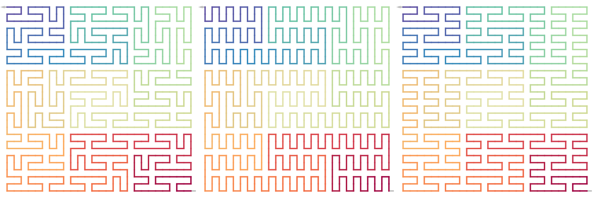
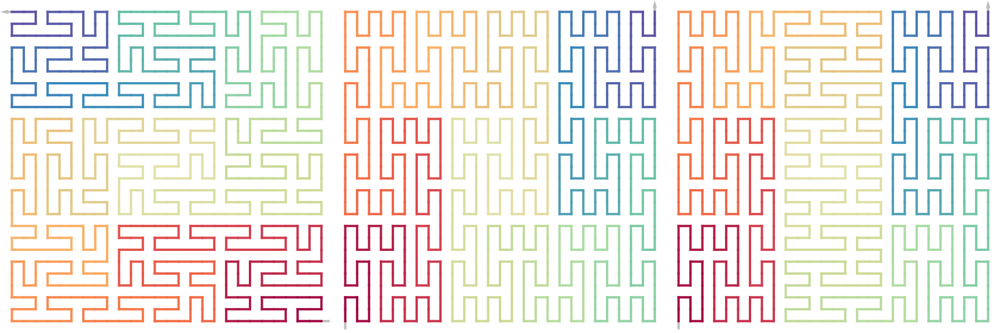

Unit flipping
Zuguang Gu (z.gu@dkfz.de)
2024-08-02
Source:vignettes/unit_flipping.Rmd
unit_flipping.RmdIf the level-1 unit is not symmetric, there will be a flipped version of the expansion rules. The flip can happen on the diagonal if the corner value of the unit is 11/22 or vertical/horizontal if the corner value of the unit is 12/21.
We will use the Peano curve as an example because it is easier to identify different flipped patterns by eyes.
p = sfc_peano("I", rot = 90, level = 3)Flip individual units
Each unit on a certain level of the curve can be independently flipped. The unit is specified by its “hierarchy index”. The units are organized in a hierarchical way on the curve. See the following examples:
par(mfrow = c(1, 3))
sfcurve:::test_sfc_index(p, "") # the complete curve
sfcurve:::test_sfc_index(p, "4")
sfcurve:::test_sfc_index(p, "4:2")
sfc_flip_unit() flips a single unit or a list of units. Whether it is a diagonal flip or a vertical/horizontal flip is automatically detected.
p2 = sfc_flip_unit(p, "7:3") # the most topright 3x3 unit
p3 = sfc_flip_unit(p, as.character(1:9)) # every level-2 square units
draw_multiple_curves(
p, p2, p3,
nrow = 1, lwd = 2)Flip level-1 units
There is a helper function change_level1_unit_orientation() which change the orientation of all level-1 units simultaneously.
p2 = change_level1_unit_orientation(p, "vertical")
p3 = change_level1_unit_orientation(p, "horizontal")
draw_multiple_curves(
p, p2, p3,
nrow = 1, lwd = 2)
Note this type of flipping does not affect the higher level structure.
It internally applies sfc_apply() on the depth of sfc_level(p)-1 (i.e. level = 1) which will introduced in later sections.
Set flipping when creating the curve
As has already shown in the vignette “Generalized Peano Curve”, sfc_peano() accepts its argument flip as a self-defined function.
p2 = sfc_peano("I", level = 3, flip = function(p) {
p@rot %in% c(90, 270)
})
p3 = sfc_peano("I", level = 3, flip = function(p) {
n = length(p)
l = rep(FALSE, n)
ind = seq(1, n/3)
l[ind] = p@rot[ind] %in% c(90, 270)
ind = seq(n/3+1, n/3*2)
l[ind] = p@rot[ind] %in% c(0, 180)
ind = seq(n/3*2+1, n)
l[ind] = p@rot[ind] %in% c(90, 270)
l
})
draw_multiple_curves(p, p2, p3,
nrow = 1, lwd = 2)
Being different from change_level1_unit_orientation() which is only applied on level 1, the self-defined function flip() is appied to every level of the curve.
Adjust flipping on a generated curve
We can also adjust the structure of the curve by sfc_apply() on a certain depth. To better control the flipping patterns, we use p2 where all level-1 units are all vertical.
p3 = sfc_apply(p2, 1, function(x, i) {
if(i %% 2 == 1) {
sfc_flip_unit(x)
} else {
x
}
})
p4 = sfc_apply(p2, 2, function(x, i) {
if(i %% 9 %in% 4:6) {
sfc_flip_unit(x, to = "horizontal")
} else {
x
}
})
draw_multiple_curves(
p, p3, p4,
nrow = 1, lwd = 2)Seed as a sequence
sfc_flip_unit(), change_level1_unit_orientation() and sfc_apply() only work on curves with a single letter as the seed because internally they use sfc_index() to get subunits and sfc_index() only works on square curves. Only the “flip” function works when the seed is a sequence.